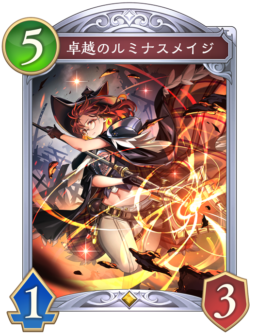
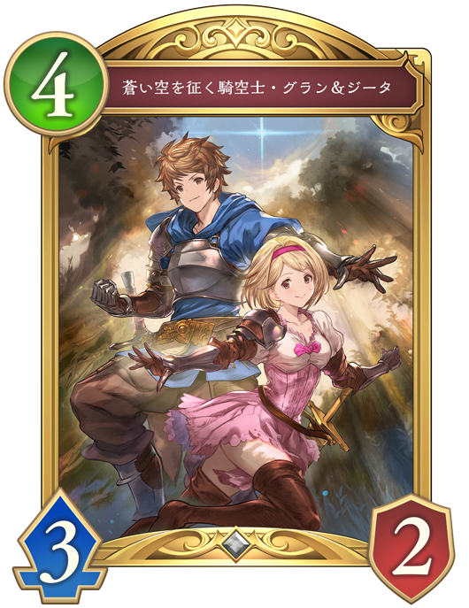

Q. 上記の予測の理由を踏まえた上で対処として良いと思うものを選びなさい

「卓越のルミナスメイジ」を出して進化し、盤面に5体残しながら相手のフォロワーを倒す。
有効度：★★★★
「マナリアフレンズ・アン&グレア」は進化込みでフォロワーを3体までしか倒せないため、4体以上盤面に並べるとフォロワーを処理できず、次のターンに返しやすくなる。 「マナリアフレンズ・アン&グレア」が除去するためにフォロワーを攻撃するため、体力が4になり、「干絶の顕現・ギルネリーゼ」などで返せる。

「蒼い空を征く騎空士・グラン&ジータ」のモード1（相手の場のフォロワーからランダム1枚に5ダメージ）を選んで出す。
有効度：★★
「蒼い空を征く騎空士・グラン&ジータ」のファンファーレで進化権を使わずにフォロワーを破壊することができる。 しかし、盤面にフォロワーが2体しかおらず、そのうえ体力が3以下なので「マナリアフレンズ・アン&グレア」が6/6のままで残ってしまう。
 「干絶の顕現・ギルネリーゼ」を出して、ファンファーレで相手のフォロワーを選択して倒す。
「干絶の顕現・ギルネリーゼ」を出して、ファンファーレで相手のフォロワーを選択して倒す。
有効度：★
「干絶の顕現・ギルネリーゼ」を出してしまうと守護裏の「マナリアフレンズ・アン&グレア」の返しがなくなり、場に残ってしまうため使うのはよろしくない。
 「休日の王女・プリム」を出した後、手札に加わった「静かなるメイド・ノーニャ」も出し、それを進化して場にある「颶風の天業・グリームニル」でフォロワーを倒す。
「休日の王女・プリム」を出した後、手札に加わった「静かなるメイド・ノーニャ」も出し、それを進化して場にある「颶風の天業・グリームニル」でフォロワーを倒す。
有効度：★★★
「静かなるメイド・ノーニャ」が必殺を持つため、進化することで5/5になる。 スペルブーストで0コストになったカードによって体力を3以下にされない限りは、1体は相打ちでき盤面が返しやすくなる。
対処の説明(クリックすると表示されるよ)
「マナリアフレンズ・アン&グレア」は進化込みでフォロワーを3体までしか倒せないため、4体以上盤面に並べるとフォロワーを処理できず、次のターンに返しやすくなる。
3体以上フォロワーを並べると進化権を使い、「マナリアフレンズ・アン&グレア」が除去するためにフォロワーを攻撃するため、体力が減り返しやすくなる。
そのため、「卓越のルミナスメイジ」をプレイして盤面を展開していくことが「マナリアフレンズ・アン&グレア」に対して有効度が高いプレイとなる。